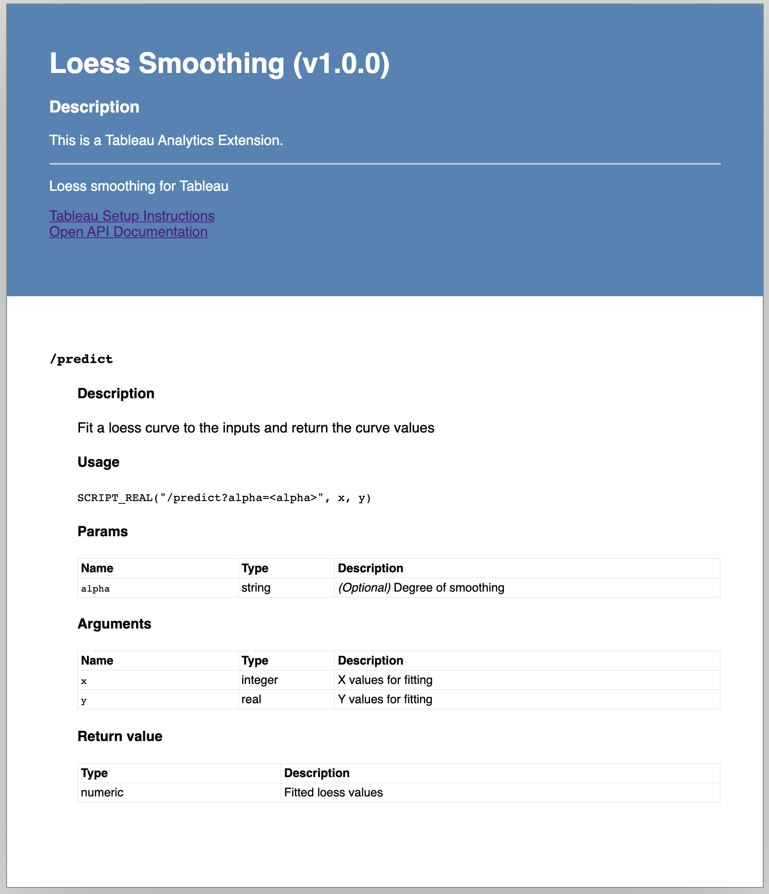

vignettes/tableau-developer-guide.Rmd
tableau-developer-guide.RmdBefore you use plumbertableau extensions in Tableau, you’ll need to configure your extension server in Tableau. See “Publishing plumbertableau Extensions to RStudio Connect” for detailed instructions on setting up Tableau and RStudio Connect to work together.
plumbertableau extensions are used within calculated fields in Tableau, with calls to Tableau’s SCRIPT_* functions.
plumbertableau automatically generates a documentation page with example calls for each endpoint in the extension. These are what you see when you view the extension on RStudio Connect.

This page includes the following information about the extension:
For each endpoint, it includes:
SCRIPT_* command, ready for use in a Tableau workbookYou can copy and paste the usage example (the SCRIPT_* command) into a calculated field in Tableau (it generates the correct URL), and replace the argument placeholders with actual values from the Tableau workbook.
Using a plumbertableau extension in a calculated field
We’ve found that a few practices in Tableau ensure that the data you pass to a plumbertableau extension is sent correctly.
ATTR([VALUE_NAME]).